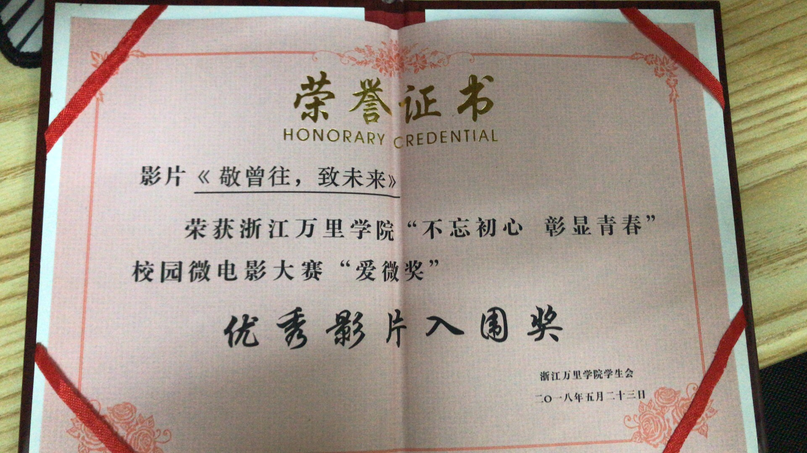
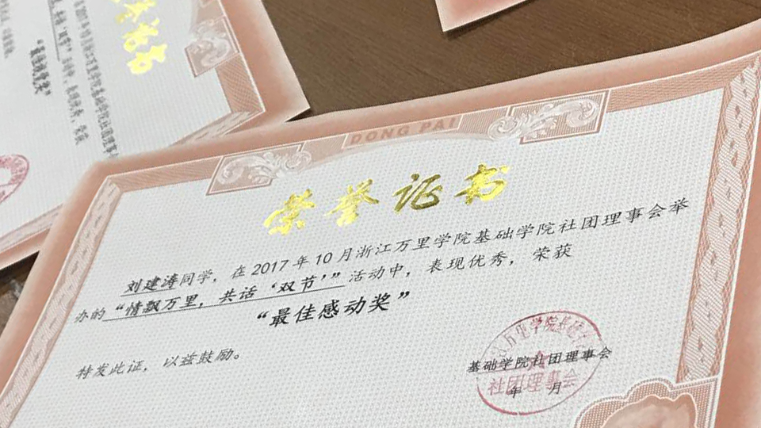
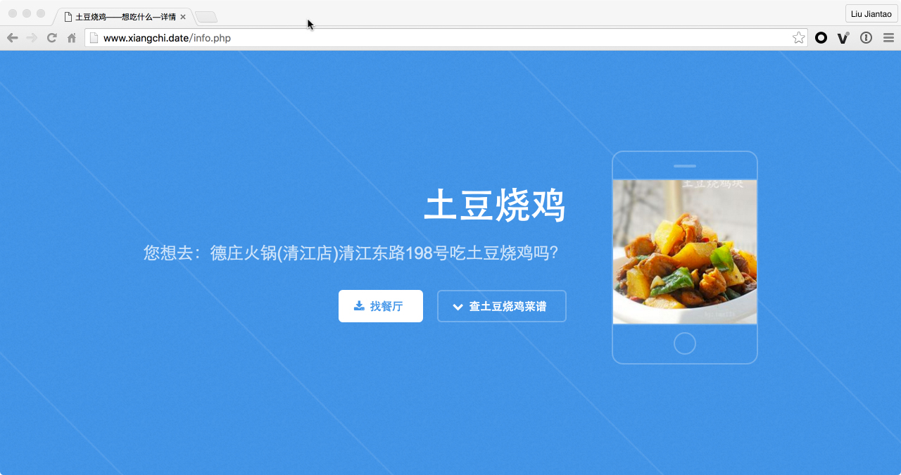
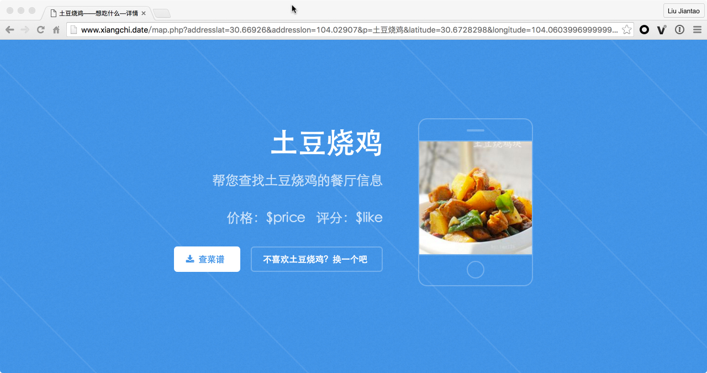

-
- Basic info. 基本信息
- 个人信息: 刘建涛 / 男
- 毕业院校: 浙江万里学院
- 工作年限: 无
- 常用ID: 刘建涛涛涛
- 微博: @刘建涛涛涛
- GitHub: Liujiantao
-
- Experience. 项目与相关经验
浙江万里学院环境设计17级宣传委员（2017.9 - 至今）
-
团支部相关工作
组织策划 “青春荏苒，踏梦前行”主题团日活动
使用Photoshop制作海报等相关宣传资料，活动结束后独立完成微信公众号宣传通稿
浙江万里学院基础学院动物保护协会（2017.9 - 至今）
-
宣传部相关工作
负责“万里动保会”公众号的日常维护以及运营工作
使用Photoshop制作明信片/海报等相关宣传资料
宁波领养日（2018.4 - 至今）
-
微信公众号
负责宁波领养日公众号（ningbolingyangri）的编辑工作
-
志愿者
跟拍宁波领养日公益活动，担任过数次摄影志愿者
熟练使用Lightroom/Photoshop相关软件进行图像后期处理
个人项目
-
微电影《敬曾往，致未来》
校园青春题材微电影 《敬曾往，致未来》获得浙江万里学院“不忘初心，彰显青春”校园微电影大赛“爱微奖”优秀影片入围奖
担任导演/摄制/剪辑相关工作
剪辑使用Adobe Premiere软件
 -
摄影作品《生活》
摄影作品 《生活》获得由浙江万里学院基础学院社团理事会举办的“情飘万里，共话‘双节’”活动“最佳感动奖”
取材自校园，独立拍摄完成
图像后期使用Photoshop、Lightroom相关软件
 -
贴吧签到助手 源代码
贴吧签到助手PHP版
原生PHP编写，无任何依赖
-
想吃什么
利用HTML5实现的随机推荐附近美食的网页，兼容现代浏览器和移动端
后端使用PHP编写，数据库使用Mysql，缓存使用 Redis，有日志记录功能
前端使用原生HTML5编写，无任何依赖
 
-
- Skill. 技能清单
专业技能
-
设计
能够熟练运用Photoshop / IIIustrator相关软件进行设计工作
-
后端开发
能够熟练利用PHP语言设计相关程式，熟练操作MySql、Redis等相关支持软件
理解面对对象编程设计
有独立PHP开发制作经验，能独立完成前后端的开发
-
前端开发
能利用HTML5/JavaScript进行前端的开发
理解jQuery等前端支持库
有HTML5开发经验
公众号
-
编辑
熟悉微信公众号的运营流程
了解运营/广告方面的一些知识
有微信公众平台开发经验
摄影
-
拍摄
熟悉使用各类摄影器材
能拍摄各个题材的相关照片
了解新闻摄影/人像摄影/纪实摄影
-
后期
熟悉使用各类后期软件（包括但不限于Photoshop/Lightroom）
- Other. 其他
-
中国图库签约摄影师
宁波领养日公众号运营常任编辑